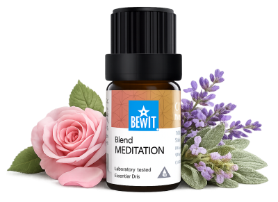

Meditace a ztišení
pro hluboký klid a přítomnost
Těžko se ztišit, myšlenky neustále běhají nebo chcete prohloubit svou meditační praxi. Ukáži vám, jak esence pomáhají připravit mysl a prostor pro hlubší ztišení a přítomnost.

pro hluboký klid a přítomnost
Těžko se ztišit, myšlenky neustále běhají nebo chcete prohloubit svou meditační praxi. Ukáži vám, jak esence pomáhají připravit mysl a prostor pro hlubší ztišení a přítomnost.

Směs vytvořená přímo pro hluboké ztišení, meditaci a kontemplaci.
Pomáhá zpomalit vnitřní dialog, otevřít prostor pro tiché vedení a spočinout v přítomnosti.
💧 Jak použít: přidej 3–5 kapek do difuzéru před meditací nebo přičichni z dlaní — nechte vůni signalizovat mysli, že je čas zpomalit.
Zjistit více →💧 Jak použít: přidej 3–5 kapek do difuzéru před meditací — kadidlo připraví mysl na hloubku.
Chci hluboké ticho💧 Jak použít: přidej 3–5 kapek do difuzéru nebo zředěný v nosném oleji nanes na zápěstí před modlitbou nebo meditací.
Chci ztišení💧 Jak použít: přidej 3–5 kapek do difuzéru.
Chci prouděníMeditace nepotřebuje být dokonalá. Stačí začít. Esence mohou být jednoduchým rituálem, který mysli signalizuje: teď je čas být tady. Zkuste to každý den jen pět minut.
Mohlo by vás také zajímat: